Primeiros Passos
Clone
Primeiro você precisa clonar o projeto do repositório no GitHub: https://github.com/mauprogramador/scopus-searcher-api
No terminal Bash usando o Git:
No Vs Code usando a Extensão do Git:
- Abra a Paleta de Comandos e pressione
Ctrl+Shift+PouF1 - Selecione o comando
Git: Clonee clique nele - Cole a URL do repositório: https://github.com/mauprogramador/scopus-searcher-api.git
- Pressione
Enterou clique emClone from URLe selecione um diretório
Nota: dê uma olhada na Documentação do Controle de Versão.
Execute
Com Python3:
Com Docker:
Swagger interativo
Depois de iniciar a aplicação, você pode acessar o Swagger UI clicando em: http://127.0.0.1:8000
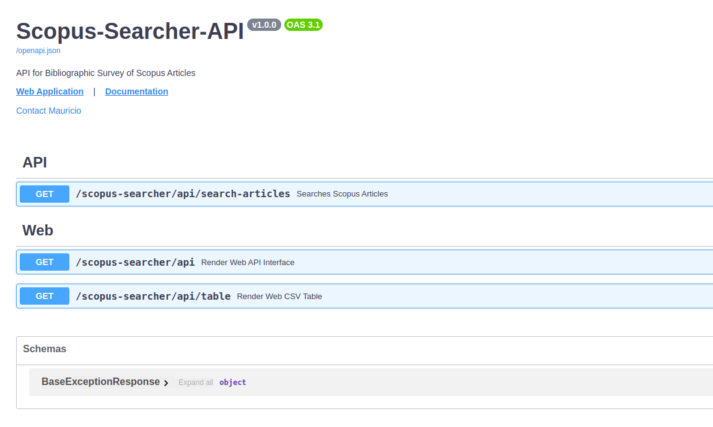
Selecione o Endpoint da API /search-articles e clique no botão Try it out.
- Insira sua
Api KeyeKeywords. - As
Palavras-chavedevem ser separadas por vírgula. - É obrigatório o preenchimento do campo da
Api Keye pelo menos duasPalavras-chave. - O cabeçalho
X-Access-Tokenserá definido automaticamente, você não deve alterá-lo. - Clique no botão Execute.
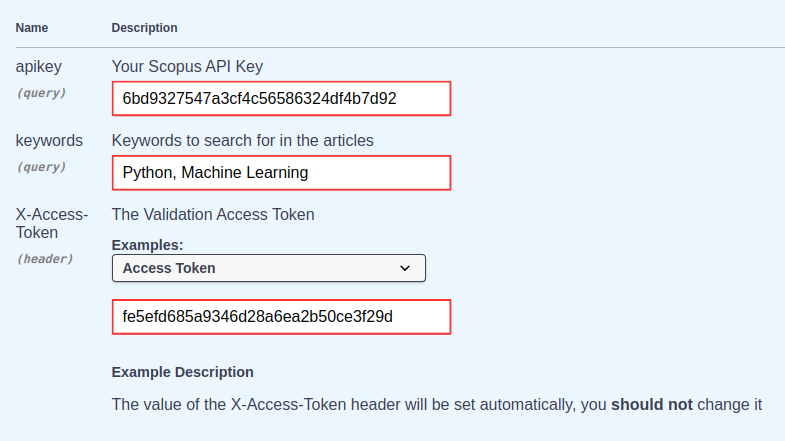
Se algum artigo for encontrado com sucesso, irá retornar um arquivo CSV contendo todas as informações da pesquisa. Você pode clicar no botão Download para baixar o arquivo.
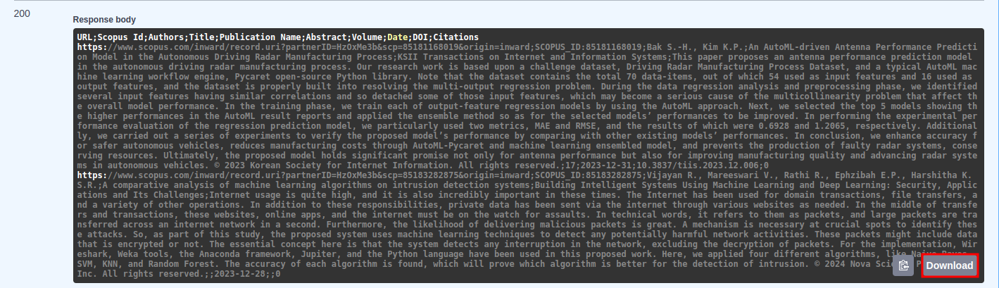
Caso nenhum artigo seja encontrado, uma mensagem retornará informando o que houve de errado. Você deve primeiro ler e analisar a mensagem e tentar entender o que causou o erro antes de tentar novamente.
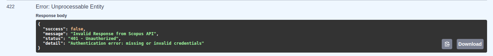
Aplicação Web
Depois de iniciar a aplicação, você pode acessar a aplicação Web clicando em: http://127.0.0.1:8000/scopus-searcher/api
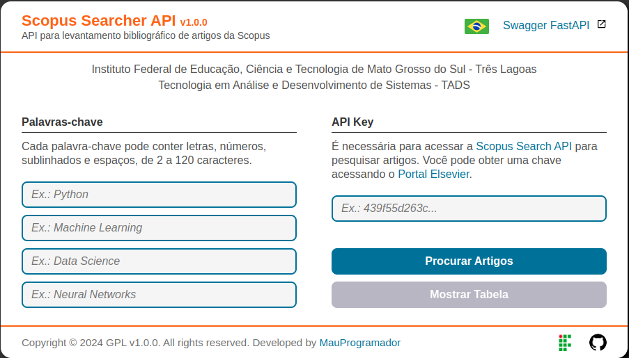
Na página web, clique nos campos e insira seus dados, certificando-se de que estão corretos.
- Selecione o idioma de sua preferência clicando no símbolo da Bandeira (Suporte para
en-usept-br). - Insira sua
Api KeyePalavras-chavenos respectivos campos. - Insira uma
Palavra-chavepara cada campo.. - É obrigatório o preenchimento do campo da
Api Keye de pelo menos dois campos dasPalavras-chave. - Clique no botão Procurar Artigos e aguarde os resultados da pesquisa.
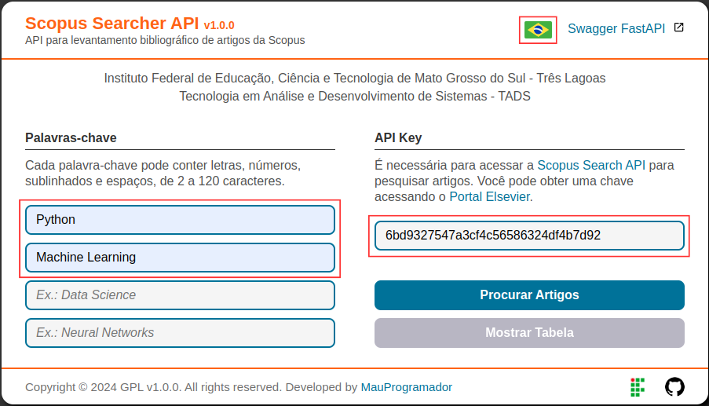
Todos os campos da página web estão configurados para verificar se as informações de cada respectivo campo estão corretas, portanto você deve estar atento às regras e condições relativas à Api Key e às Palavras-chave fornecidas na seção de requisitos.
Assim que você começar a digitar em um campo, ele lhe dará um feedback automaticamente, então fique atento:
- Lembre-se que é obrigatório o preenchimento do campo da
Api Keye de pelo menos dois campos dasPalavras-chave. - A cor vermelha circulará o campo e uma mensagem será mostrada caso os dados estejam incorretos.
- A cor verde circulará o campo se os dados estiverem corretos.
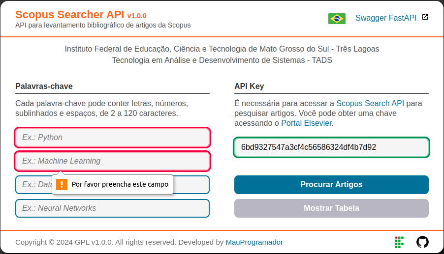
Se algum artigo for encontrado com sucesso, uma mensagem retornará informando sobre o sucesso e o arquivo CSV contendo todas as informações da pesquisa será baixado automaticamente.
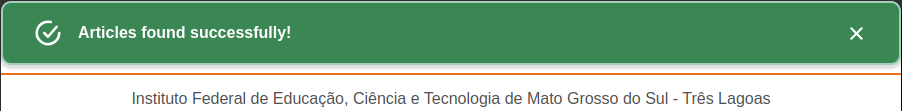
Caso nenhum artigo seja encontrado, uma mensagem retornará informando o que houve de errado. Você deve primeiro ler e analisar a mensagem e tentar entender o que causou o erro antes de tentar novamente.
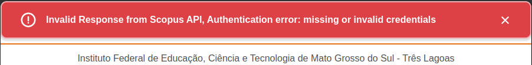
Você também pode verificar no inspecionar DevTools do navegador a resposta da requisição.
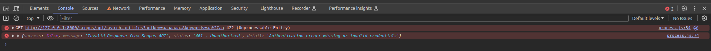
CSV Table
Após o término com sucesso do processamento da busca, além do download do arquivo CSV, o botão Mostrar Tabela também será liberado, e ao clicar nele você será redirecionado para uma nova página na qual uma tabela exibirá uma visualização prévia de todos os dados dos artigos encontrados.
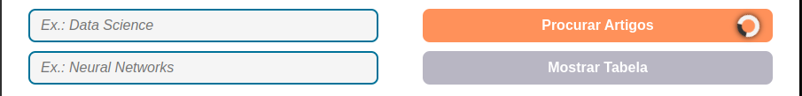
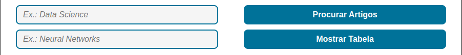
A tabela abaixo exemplifica os resultados de uma busca. Usando Python e Machine Learning como Palavras-chave, um total de 6786 artigos foi retornado da Scopus Search API. Para evitar um longo processamento, nós reduzimos o total para apenas 14, não houve perda por similaridade e demorou cerca de 34.012,64ms.
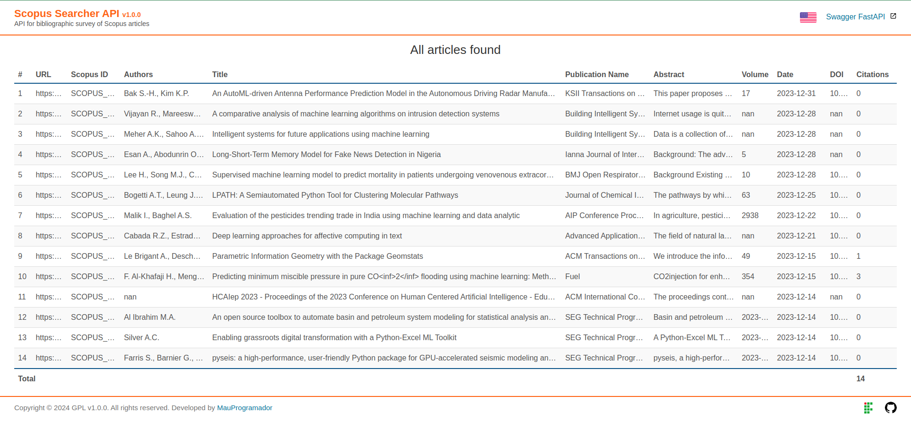
Note
Clique aqui para baixar o arquivo CSV do exemplo de pesquisa acima.
Se você quiser, você pode reduzir o número de artigos que serão retornados indo em app/gateway/api_config.py e adicionando o campo count no atributo API_URL da classe ApiConfig.